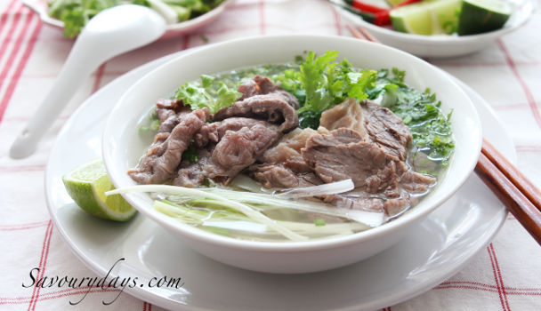

Phở

Phở là một món ăn truyền thống của Việt Nam cũng có thể xem là một trong những món ăn tiêu biểu cho nền ẩm thực Việt Nam. Thành phần chính của phở là bánh phở và nước dùng (hay nước lèo theo cách gọi miền Nam) cùng với thịt bò hoặc thịt gà cắt lát mỏng. Ngoài ra còn kèm theo các gia vị như: tương, tiêu, chanh, nước mắm, ớt... Những gia vị này được thêm vào tùy theo khẩu vị của từng người dùng. Phở thông thường dùng làm món điểm tâm buổi sáng hoặc ăn đêm, nhưng ở các thành phố lớn món ăn này được thưởng thức trong cả ngày. Các tỉnh phía Nam Việt Nam và một số vùng miền khác phở được bày bàn kèm cả đĩa rau thơm như hành, giá và những lá cây rau mùi, rau húng, trong đó ngò gai là loại lá đặc trưng của phở; tuy nhiên tại Hà Nội thì không có đĩa rau sống này. Phở thường là phở bò hay phở gà, nhưng đôi khi cũng có những biến thể khác như phở heo, phở tôm, phở ếch, dù không mấy thành công.